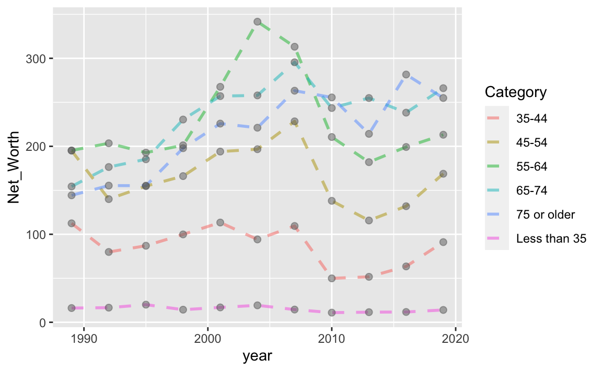
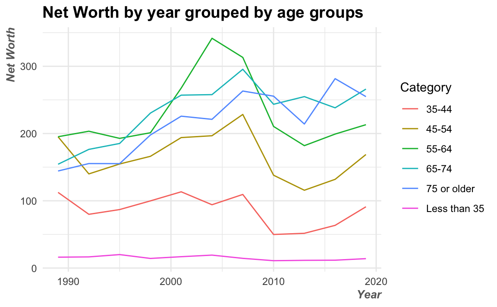
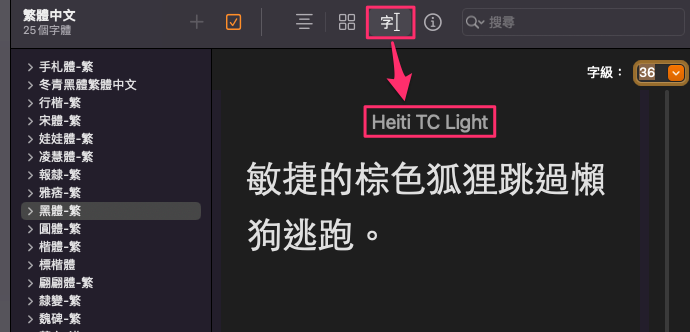
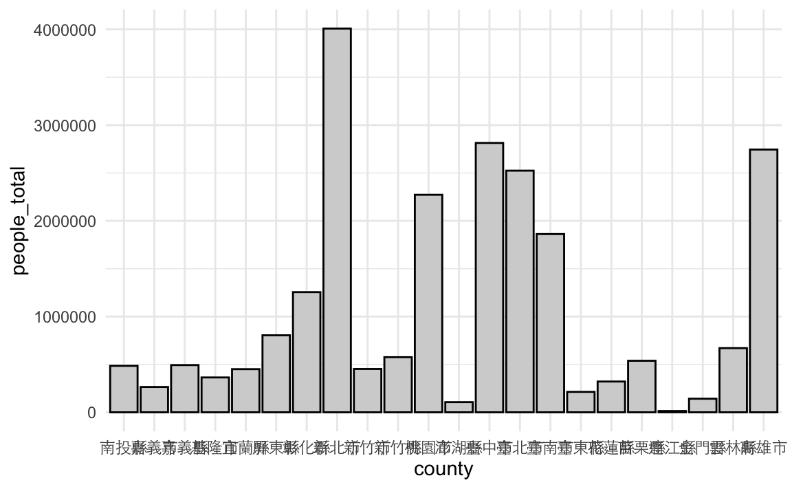
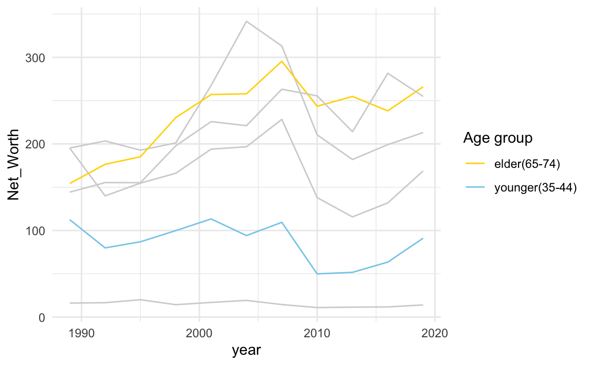

Chapter 19 Visualization
19.1 ggplot2
ggplot2和Python的matplotlib都是常用的視覺化套件，但在設計上有一些主要的差異。首先，ggplot2是基於grammar of graphics的設計原則，而matplotlib則是基於pyplot-style的設計風格。這意味著ggplot2更加著重於資料和視覺化之間的關係，並且提供了一個統一的語法來描述這些關係，而matplotlib則更加注重對於底層圖形物件的控制。其次，ggplot2支持更多的圖形屬性，例如數值變數、類別變數、時間序列等等，並且可以輕鬆地進行層疊圖、面積圖等高級視覺化技巧，而matplotlib則需要手動設置較多的屬性來達到類似的效果。此外，ggplot2在設計上更加注重美學和可讀性，因此預設的圖形風格更加美觀且易於閱讀，而matplotlib的預設風格則比較簡單，需要進行額外的設置才能達到類似的效果。
19.2 VIS packages
除了ggplot2本身之外，尚有相當多基於ggplot或tidyverse風格的視覺化套件，如：
- ggraph：ggraph是一個基於ggplot2的視覺化套件，專門用於網絡和關係圖的繪製，提供了多種佈局和美學風格的選擇。
- ggmap：ggmap是一個基於ggplot2的地圖繪製套件，可以將Google Maps、OpenStreetMap等地圖數據與ggplot2圖形整合起來，方便進行地理位置相關的資料視覺化。
- ggridge：ggridge是一個基於ggplot2的視覺化套件，專門用於繪製ridge plots，也就是密度圖的一種變形。它可以幫助使用者更好地展示數據的分佈和趨勢。Introduction to ggridges (r-project.org)
- ggthemes：ggthemes是一個基於ggplot2的視覺化套件，提供了多種高質量的主題風格和顏色調色板，可以讓使用者快速改善圖表的外觀和可讀性。
- ggnatimate：ggnatimate用於將ggplot所產製的圖表多增加一個變量以轉製為動態圖表，支持多種動畫效果。
- ggally：ggally是一個基於ggplot2的視覺化套件，提供了多種高級散點圖和數據矩陣的繪製方式，方便使用者進行多變量分析和資料探索。
- ggrepel：ggrepel是一個基於ggplot2的視覺化套件，用於解決文字標籤重疊的問題，可以自動調整文字標籤的位置，使其更加易讀和美觀。
19.3 ggplot簡介
本節著重在介紹ggplot的基本概念與設定。
訣竅：可在一開始便透過knitr::opts_chunk$set(echo = TRUE, fig.width = 2, fig.asp = 0.4)來一次設定所有圖片。fig.width = 8與fig.height = 6 是以英吋（inches）為單位，或用fig.dim = c(8, 6)一次設定長寬1。echo = TRUE是設定knit出輸出格式（如html）時，也要包含程式碼。如果echo = FALSE的話，就只會輸出文字和圖形。
19.4 繪圖基礎：折線圖
19.4.1 繪圖三要素
用ggplot來繪製圖形有三個基本函式ggplot() + aes() + geom_圖表類型。
- 指定要進行繪圖
ggplot()：用%>%將資料（dataframe）pipe給ggplot()後，底下各增添的繪圖選項都用+的符號，類似不斷修正繪圖結果的意思。 - 指定X／Y軸與群組因子
aes()：指定圖表的X/Y軸分別是什麼變數，有些圖表只需要單一個變數（例如Density-chart和Histogram），有些需要X/Y兩個變數（例如Scatter-chart）什麼的變數要做視覺化，Boxplot甚至可以直接指定最大、最小、Q1、Q3和Median等多個變數。 - 指定要繪製的圖表類型。例如Line-chart為
geom_line()、Scatter-chart為geom_point()、Bar-chart為geom_col()或geom_bar()。查閱ggplot cheat sheet可以快速翻閱有哪些圖表類型（如截圖）。
ggplot-cheat-sheet


19.5 NYT: Inequality
Teach About Inequality With These 28 New York Times Graphs - The New York Times (nytimes.com)
ggplot是以變數為基礎的視覺化套件，也就是說，當準備好dataframe後，就可以在ggplot中指定要用哪些變數來繪圖。也因此，務必把dataframe整理為tidy型態，也就是長表格（long-form）的型態。整理完資料後，我會習慣地用names(plot)或glimpse(plot)來看一下該資料所有的變項，好可以在下一階段的繪圖做參考。
19.5.1 Visualizing
NW <- read_csv("data/interactive_bulletin_charts_agecl_median.csv") %>%
select(Category, year, Net_Worth) %>%
group_by(Category) %>%
arrange(year) %>%
ungroup()## Rows: 66 Columns: 37
## ── Column specification ────────────────────────────────────────────────────────
## Delimiter: ","
## chr (1): Category
## dbl (36): year, Before_Tax_Income, Net_Worth, Assets, Financial_Assets, Tran...
##
## ℹ Use `spec()` to retrieve the full column specification for this data.
## ℹ Specify the column types or set `show_col_types = FALSE` to quiet this message.NW %>% glimpse()## Rows: 66
## Columns: 3
## $ Category <chr> "Less than 35", "35-44", "45-54", "55-64", "65-74", "75 or o…
## $ year <dbl> 1989, 1989, 1989, 1989, 1989, 1989, 1992, 1992, 1992, 1992, …
## $ Net_Worth <dbl> 16.17019, 112.47530, 195.11630, 195.25554, 154.34277, 144.29…這是預期視覺化的結果。

先將year和Net_worth分別繪製在X與Y軸上，並用geom_line()繪製為折現圖。結果圖表中呈現鋸齒狀的折線，看似有問題，但其實是合理的。因為year是一個離散變數，而我們希望每個年齡層一條線的話，那就要照年齡層來分組。也因此，每一年都有有每個年齡層的資料，當我們把「年」作為X軸時，自然同一年就會有數筆不同年齡層的資料，因此才會是鋸齒狀的。
NW %>%
ggplot() +
aes(x=year, y=Net_Worth) +
geom_line()
不同的圖表類型是可以疊加在同一張圖上的。我們也可以把geom_point() 另一種圖表型態加入，也是可以的，兩者的X與Y不相衝突。geom_line()、geom_point()、geom_text()三者會經常伴隨出現。
NW %>%
ggplot() +
aes(x=year, y=Net_Worth) +
geom_line() +
geom_point()
19.5.2 Grouping
上圖是我們把多個年齡層的逐年資料畫在同一條折線上，所以會呈現鋸齒狀折現的狀況。但這些年齡層並非在同一條線上呀？因此，我們要根據Category這個變數來做分組。
NW %>%
ggplot() +
aes(x=year, y=Net_Worth, group=Category) +
geom_line() +
geom_point(stat="identity")
如希望不同線條上不一樣的色彩，應指定color=Category。
NW %>%
ggplot() + aes(year, Net_Worth, color=Category) +
geom_line()
- 用color、fill或group來做分組？
-
geom_line()的色彩是在線，而不是在面上。如果色彩是在點（如geom_point()）或線（geom_line()）上，就是用color來指定顏色。但如果是如類似下面的例子，用
geom_area()來視覺化的話，因為顏色填的是面，所以要用fill=Category。以下範例甚至同時指定color=Category, fill=Category。但折線圖如果要用geom_area()來視覺化的話，最好要上顏色的不要超過二個，不然就會像底下這個例子一樣，即使設定alpha=0.2的半透明，仍然會看不懂哪些顏色疊在一起。geom_area()預設應該是累積分佈圖（也就是不同的群組會在Y軸方向疊加），如果希望觀察兩個分布的差別，而不是希望看見整體趨勢的話，那要增加position="dodge"的參數，並把alpha（半透明）設定為1以下的數值。
NW %>%
ggplot() + aes(year, Net_Worth, color=Category, fill=Category) +
geom_area(position="dodge", alpha=0.2)
19.6 Adjusting Chart
19.6.1 點線型態
下面的例子同時用了geom_line()和geom_point()，且分別設定了線寬（size=1）、點的大小(size=2)，折線型態（linetype="dashed"）、半透明程度（alpha）。
ggplot2 line types : How to change line types of a graph in R software? - Easy Guides - Wiki - STHDA
NW %>%
ggplot() + aes(year, Net_Worth, color=Category) +
geom_line(size=1, linetype = "dashed", alpha=0.5) +
geom_point(size=2, color="dimgrey", alpha=0.5)## Warning: Using `size` aesthetic for lines was deprecated in ggplot2 3.4.0.
## ℹ Please use `linewidth` instead.
## This warning is displayed once every 8 hours.
## Call `lifecycle::last_lifecycle_warnings()` to see where this warning was
## generated.
19.6.2 Line Types
See more from ggthemes https://github.com/BTJ01/ggthemes/tree/master/inst/examples
library(ggthemes)
rescale01 <- function(x) {
(x - min(x)) / diff(range(x))
}
gather(economics, variable, value, -date) %>%
group_by(variable) %>%
mutate(value = rescale01(value)) %>%
ggplot(aes(x = date, y = value, linetype = variable)) +
geom_line() +
scale_linetype_stata() + theme_minimal()
19.6.3 標題、標籤與圖說
Titles, labels, and legend 設定標題與X／Y軸標題（法一）：以下設定了圖表的圖表標題、和X軸與Y軸的軸標題（xlab與ylab）。
NW %>%
ggplot() + aes(year, Net_Worth, color=Category) +
geom_line() +
theme_minimal() +
xlab("Year") +
ylab("Net Worth") +
ggtitle("Net Worth by year grouped by age groups")
設定標題與X／Y軸標題（法二）：這是一次設定圖表標題（title）、次標題（suttitle）、X軸與Y軸標題的方法。
NW %>%
ggplot() + aes(year, Net_Worth, color=Category) +
geom_line() +
theme_minimal() +
labs(title = "Net Worth by year grouped by age groups",
subtitle = "Source from: ...",
x = "Year",
y = "Net Worth")
調整X軸與Y軸標題位置的：必須要透過theme()來設定axis.title.x = element_text(hjust=1)。
NW %>%
ggplot() + aes(year, Net_Worth, color=Category) +
geom_line() +
theme_minimal() +
labs(title = "Net Worth by year grouped by age groups",
x = "Year",
y = "Net Worth") +
theme(axis.title.x = element_text(hjust=1),
axis.title.y = element_text(hjust=1))去除X／Y軸標題（不佳）：直接將空字串Assign給title、x、與y即可。
NW %>%
ggplot() + aes(year, Net_Worth, color=Category) +
geom_line() +
theme_minimal() +
labs(title = "", x = "", y = "")
去除X／Y軸標題（較佳）：透過設定theme()來調整。可發現透過這種設定方法，原本標題和X／Y軸標題的邊界空間就會被釋放出來。
# No extra space for xlab, ylab and title
NW %>%
ggplot() + aes(year, Net_Worth, color=Category) +
geom_line(show.legend = F) +
theme_minimal() +
theme(plot.title = element_blank(),
axis.title.x = element_blank(),
axis.title.y = element_blank())
19.6.4 字體樣式
調整字型會建議都從theme()來做調整，所有圖面上看得到的字都有相對應的變數可以調整字型。例如以下的例子中，把標題的字型大小調整為14粗體、X與Y軸的字型則調整了向右對齊、10粗斜體、顏色為dimgrey。
NW %>%
ggplot() + aes(year, Net_Worth, color=Category) +
geom_line() +
theme_minimal() +
labs(title = "Net Worth by year grouped by age groups",
x = "Year",
y = "Net Worth") +
theme(plot.title = element_text(size=14, face="bold"),
axis.title.x = element_text(hjust=1, size=10,
color="dimgrey",
face="bold.italic"),
axis.title.y = element_text(hjust=1, size=10,
color="dimgrey",
face="bold.italic")
)
19.6.5 圖表主題色調
ggplot也有其圖表主題色調。之前範例的灰色圖表背景就是預設的主題，ggplot中還有好幾個預設圖表主題可以選，例如theme_minimal()或theme_tw()等等。
- Modify components of a theme — theme • ggplot2 (tidyverse.org)
- bbplot/bbc_style.R at master · bbc/bbplot (github.com)
NW %>%
ggplot() + aes(year, Net_Worth, color=Category) +
geom_line() +
theme_minimal()19.6.6 預設主題
如果希望所有的圖表都有一致的顏色和排版的調性，可以在一開始編輯Rmd的時候就設計好一套theme()並指給一個變數（例如以下的th）。
th <- theme(plot.title = element_text(size=14, face="bold"),
axis.title.x = element_text(hjust=1, size=10,
color="dimgrey",
face="bold.italic"),
axis.title.y = element_text(hjust=1, size=10,
color="dimgrey",
face="bold.italic")
)
NW %>%
ggplot() + aes(year, Net_Worth, color=Category) +
geom_line(linetype = "dashed", alpha=0.5) +
geom_point(size=2, color="dimgrey", alpha=0.5) +
theme_minimal() +
labs(title = "Net Worth by year grouped by age groups",
x = "Year",
y = "Net Worth") + th19.6.7 顯示中文字體
Python和R這些程式語言的預設視覺化套件都沒辦法顯示中文，所以如果要顯示中文的話，就要指定圖表標題、X、Y軸標籤、圖說和各個部件的字型。因為我在Mac上繪圖，所以我將字型指定為Heiti TC Light。如果想知道自己的電腦上有什麼可以用，可以到電腦的字體簿上查找中文字體名稱，或者上網google「ggplot 中文字型選擇」。

county <- read_csv("data/tw_population_opendata110N010.csv") %>%
slice(-1, -(370:375)) %>%
type_convert() %>%
mutate(county = str_sub(site_id, 1, 3)) %>%
group_by(county) %>%
summarize(
area = sum(area),
people_total = sum(people_total)
) %>%
ungroup()## Rows: 375 Columns: 5
## ── Column specification ────────────────────────────────────────────────────────
## Delimiter: ","
## chr (5): statistic_yyy, site_id, people_total, area, population_density
##
## ℹ Use `spec()` to retrieve the full column specification for this data.
## ℹ Specify the column types or set `show_col_types = FALSE` to quiet this message.
##
## ── Column specification ────────────────────────────────────────────────────────
## cols(
## statistic_yyy = col_double(),
## site_id = col_character(),
## people_total = col_double(),
## area = col_double(),
## population_density = col_double()
## )下面這是一個長條圖的範例（barplot，不是histogram）。Barplot可以直接指定X軸為縣市（county）和Y軸為總人口數（people_total），但是要用geom_col()而非geom_bar()。除此之外，Bar的顏色有「面」的特徵，所以若要自訂整條bar的顏色，要用fill而非color，color只會是每條Bar的外框。
county %>%
arrange(desc(people_total)) %>%
ggplot() + aes(county, people_total) %>%
geom_col(fill="lightgrey", color="black") +
theme_minimal() +
theme(axis.text.x = element_text(family="Heiti TC Light"))
舉例來說，中文字型可以是標楷體（BiauKai）、宋體（Songti TC）、黑體（Heiti TC Light）、蘋方（PingFang TC）、Noto（Noto Sans CJK TC）
th <-
theme(title = element_text(family="Heiti TC Light"),
text = element_text(family="Heiti TC Light"),
axis.text.y = element_text(family="PingFang TC"),
axis.text.x = element_text(family="Heiti TC Light"),
legend.text = element_text(family="Heiti TC Light"),
plot.title = element_text(family="Heiti TC Light")
)
county %>%
ggplot() + aes(county, people_total) %>%
geom_col(fill="skyblue") +
theme_minimal() + th +
theme(axis.text.x = element_text(angle = 45))
19.6.8 X/Y軸方向
調整圖表方向
county %>%
ggplot() + aes(county, people_total) %>%
geom_col(fill="skyblue") +
coord_flip() +
theme_minimal() + th +
theme(axis.text.x = element_text(angle = 45))通常coord_flip()後往往會希望這些bar會是由上而下排序好的，但用arrange(desc(people_total)是無法解決問題的，因為Y軸原本會是照Y軸的刻度排列，而不是Y軸的數值。所以，要被排序的應該是Y軸的「文字」也就是那些縣市。因此，我們需要將該縣市轉為factor（1~n），並且讓這些縣市被安排的factor數值照people_total排列，因此要用mutate(county = reorder(county, people_total))。reorder()是一個將文字轉factor的函式，但在此特別指定照people_total的編排。
county %>%
# arrange(desc(people_total) %>%
mutate(county = reorder(county, people_total)) %>%
ggplot() + aes(county, people_total) %>%
geom_col(fill="skyblue") +
coord_flip() +
theme_minimal() + th19.7 Highlighting & Storytelling
「說故事」才是整則資料新聞的核心，在運用圖表來輔助敘事時，應搭配說理說服的內容來突顯（highlight）圖面上的特徵，而不是留待讀者自己觀察。以下有三種highlight圖表部分資料的方法。第一個方法是在繪圖時用+ scale_color_manual()或+ scale_fill_manual()指定顏色給不同群組；方法二是利用gghighlight這個套件來指定要上色的群組，而且gghighlight可以和fill與color相互搭配，仍然可以用scale_fill_manual和scale_color_manual來指定顏色。但會有個狀況是，如果原本沒群組那怎麼辦？就自己用mutate()打造群組就好。方法各有利弊與使用時機。
19.7.1 依群組指定顏色
scale_color_manual() 與scale_fill_manual()
NW %>%
ggplot() + aes(year, Net_Worth, color = Category) +
geom_line() +
scale_color_manual(
limits=c("65-74", "35-44"), # original chart group
values=c("gold", "skyblue"), # map to color
name="Age group", # legend title
breaks=c("65-74", "35-44"), # original legend group labels
labels=c("elder(65-74)","younger(35-44)"), # map to new labels
na.value = "lightgrey" # color for other groups
) +
theme_minimal()
19.7.2 使用gghighlight套件
library(gghighlight)
NW %>%
ggplot() + aes(year, Net_Worth, color = Category) +
geom_line() +
gghighlight(Category %in% c("65-74", "35-44")) +
theme_minimal() +
scale_x_continuous(breaks = NULL) +
theme(panel.background = element_rect(fill = "whitesmoke",
colour = "whitesmoke",
size = 0.5, linetype = "solid"))
使用gghighlight仍能自己使用scale_color_manual()來指定顏色
NW %>%
ggplot() + aes(year, Net_Worth, color = Category) +
geom_line() +
gghighlight(Category %in% c("65-74", "35-44")) +
scale_color_manual(
limits=c("65-74", "35-44"), # original chart group
values=c("gold", "skyblue")) + # map to color
theme_minimal()## Warning: Tried to calculate with group_by(), but the calculation failed.
## Falling back to ungrouped filter operation...## label_key: Category19.7.3 為視覺化建立群組
這個方法是在原本的資料並沒有可以作為color或fill的因子，所以自行創建一個要突顯的群組。
county %>%
mutate(group = if_else(county %in% c("新竹縣", "新竹市"), "highlight", "other")) %>%
mutate(county = reorder(county, people_total)) %>%
ggplot() + aes(county, people_total, fill=group) %>%
geom_col() +
scale_fill_manual(values=c("highlight"="Khaki", "other"="lightgrey")) +
guides(fill="none") +
coord_flip() +
theme_minimal() + th但事實上也可以用gghighlight直接達成
county %>%
mutate(county = reorder(county, people_total)) %>%
ggplot() + aes(county, people_total) %>%
geom_col(fill="deeppink") +
gghighlight(county %in% c("新竹縣", "新竹市")) +
guides(fill="none") +
coord_flip() +
theme_minimal() + th